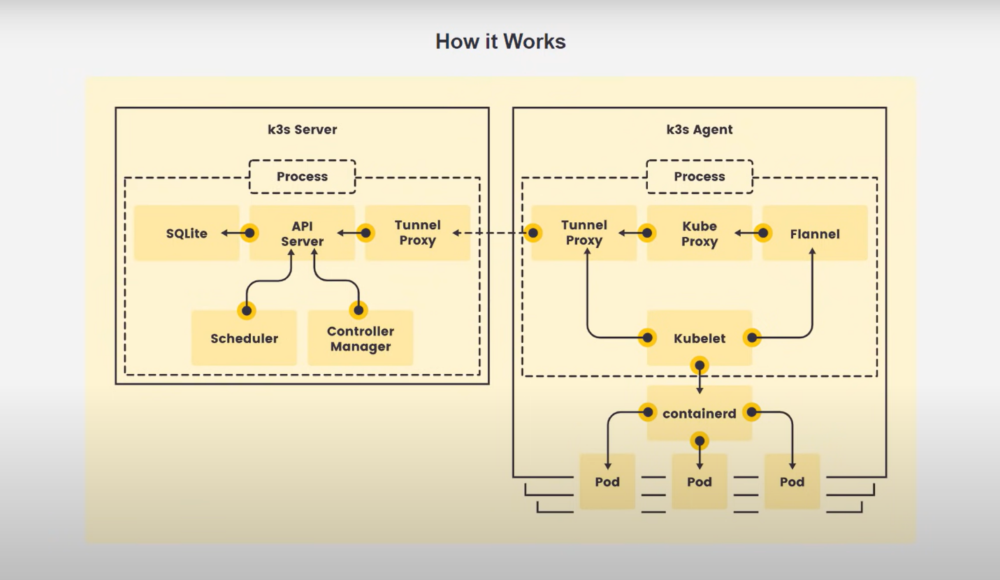
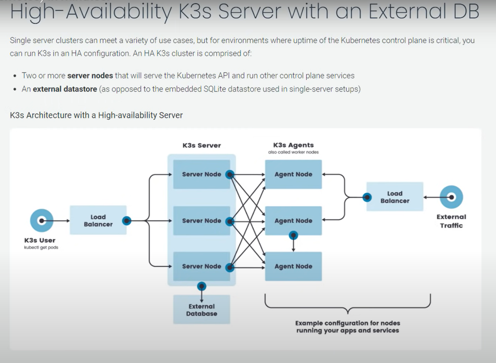
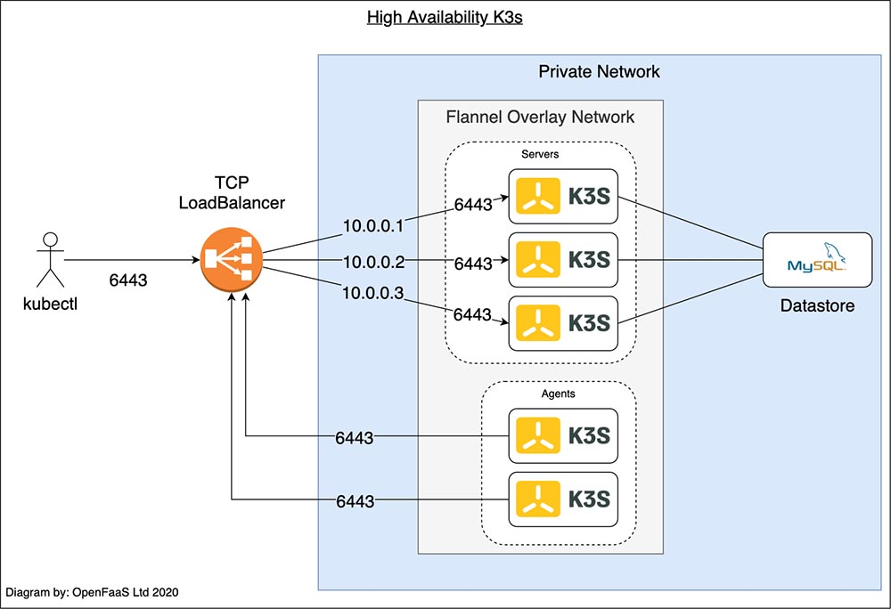
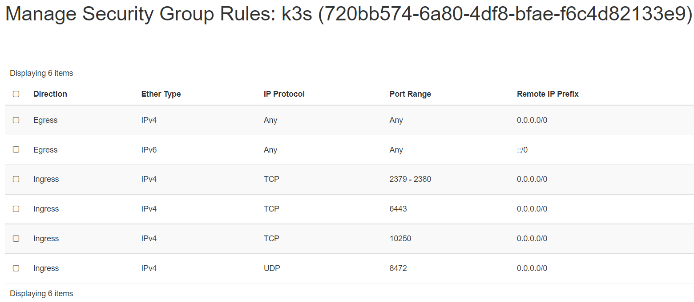
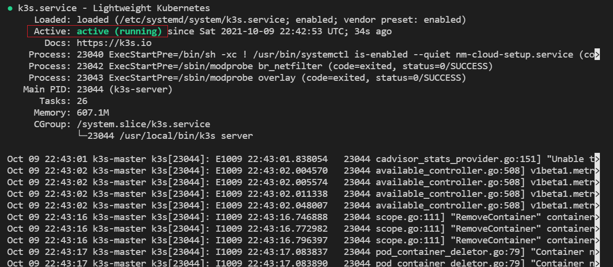
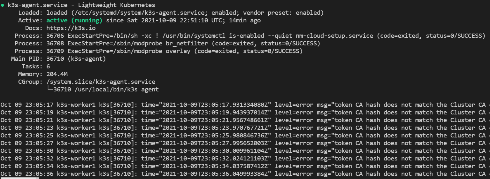

K3s
Features
- Lightweight certified K8s distro
- Built for production operations
- 40MB binary, 250MB memeory consumption
- Single process w/ integrated K8s master, Kubelet, and containerd
- Supports not only
etcdto hold the cluster state, but alsoSQLite(for single-node, simpler setups) or external DBs likeMySQLandPostgreSQL - Open source project
Components and architecure

- High-Availability K3s Server with an External DB:
 or, 
For this kind of high availability k3s setup read this.
Pre-requisite
We will need 1 control-plane(master) and 2 worker nodes to create a single
control-plane kubernetes cluster using k3s. We are using following setting
for this purpose:
- 1 Linux machine for master, ubuntu-22.04-x86_64 or your choice of Ubuntu OS image, cpu-a.2 flavor with 2vCPU, 4GB RAM, 20GB storage - also assign Floating IP to the master node.
- 2 Linux machines for worker, ubuntu-22.04-x86_64 or your choice of Ubuntu OS image, cpu-a.1 flavor with 1vCPU, 2GB RAM, 20GB storage.
- ssh access to all machines: Read more here on how to setup SSH to your remote VMs.
Networking
The K3s server needs port 6443 to be accessible by all nodes.
The nodes need to be able to reach other nodes over UDP port 8472 when Flannel VXLAN overlay networking is used. The node should not listen on any other port. K3s uses reverse tunneling such that the nodes make outbound connections to the server and all kubelet traffic runs through that tunnel. However, if you do not use Flannel and provide your own custom CNI, then port 8472 is not needed by K3s.
If you wish to utilize the metrics server, you will need to open port 10250 on each node.
If you plan on achieving high availability with embedded etcd, server nodes must be accessible to each other on ports 2379 and 2380.
-
Create 1 security group with appropriate Inbound Rules for K3s Server Nodes that will be used by all 3 nodes:

Important Note
The VXLAN overlay networking port on nodes should not be exposed to the world as it opens up your cluster network to be accessed by anyone. Run your nodes behind a firewall/security group that disables access to port 8472.
- setup Unique hostname to each machine using the following command:
echo "<node_internal_IP> <host_name>" >> /etc/hosts
hostnamectl set-hostname <host_name>
For example,
echo "192.168.0.235 k3s-master" >> /etc/hosts
hostnamectl set-hostname k3s-master
In this step, you will install kubelet and kubeadm on the below nodes
- k3s-master
- k3s-worker1
- k3s-worker2
The below steps will be performed on all the above mentioned nodes:
-
SSH into all the 3 machines
-
Switch as root:
sudo su -
Update the repositories and packages:
apt-get update && apt-get upgrade -y
- Install
curlandapt-transport-https
apt-get update && apt-get install -y apt-transport-https curl
Install Docker
- Install container runtime - docker
apt-get install docker.io -y
- Configure the Docker daemon, in particular to use systemd for the management of the container’s cgroups
cat <<EOF | sudo tee /etc/docker/daemon.json
{
"exec-opts": ["native.cgroupdriver=systemd"]
}
EOF
systemctl enable --now docker
usermod -aG docker ubuntu
systemctl daemon-reload
systemctl restart docker
Configure K3s to bootstrap the cluster on master node
Run the below command on the master node i.e. k3s-master that you want to setup
as control plane.
- SSH into k3s-master machine
- Switch to root user:
sudo su - Execute the below command to initialize the cluster:
curl -sfL https://get.k3s.io | sh -s - --kubelet-arg 'cgroup-driver=systemd' \
--node-taint CriticalAddonsOnly=true:NoExecute --docker
OR,
If you don't want to setup the K3s cluster without using docker as the
container runtime, then just run without supplying the --docker argument.
curl -sfL https://get.k3s.io | sh -
After running this installation:
- The K3s service will be configured to automatically restart after node reboots or if the process crashes or is killed
- Additional utilities will be installed, including
kubectl,crictl,ctr,k3s-killall.sh, andk3s-uninstall.sh - A kubeconfig file will be written to
/etc/rancher/k3s/k3s.yamland thekubectlinstalled by K3s will automatically use it.
To check if the service installed successfully, you can use:
systemctl status k3s
The output looks like: 
OR,
k3s --version
kubectl version
Note
If you want to taint the node i.e. not to deploy pods on this node after
installation then run: kubectl taint nodes <master_node_name> k3s-controlplane=true:NoExecure
i.e. kubectl taint nodes k3s-master k3s-controlplane=true:NoExecure
You can check if the master node is working by:
k3s kubectl get nodes
NAME STATUS ROLES AGE VERSION
k3s-master Ready control-plane,master 37s v1.21.5+k3s2
kubectl config get-clusters
NAME
default
kubectl cluster-info
Kubernetes control plane is running at https://127.0.0.1:6443
CoreDNS is running at https://127.0.0.1:6443/api/v1/namespaces/kube-system/services/kube-dns:dns/proxy
Metrics-server is running at https://127.0.0.1:6443/api/v1/namespaces/kube-system/services/https:metrics-server:/proxy
To further debug and diagnose cluster problems, use 'kubectl cluster-info dump'.
kubectl get namespaces
NAME STATUS AGE
default Active 27m
kube-system Active 27m
kube-public Active 27m
kube-node-lease Active 27m
kubectl get endpoints -n kube-system
NAME ENDPOINTS AGE
kube-dns 10.42.0.4:53,10.42.0.4:53,10.42.0.4:9153 27m
metrics-server 10.42.0.3:443 27m
rancher.io-local-path <none> 27m
kubectl get pods -n kube-system
NAME READY STATUS RESTARTS AGE
helm-install-traefik-crd-ql7j2 0/1 Pending 0 32m
helm-install-traefik-mr65j 0/1 Pending 0 32m
coredns-7448499f4d-x57z7 1/1 Running 0 32m
metrics-server-86cbb8457f-cg2fs 1/1 Running 0 32m
local-path-provisioner-5ff76fc89d-kdfcl 1/1 Running 0 32m
You need to extract a token form the master that will be used to join the nodes to the master.
On the master node:
sudo cat /var/lib/rancher/k3s/server/node-token
You will then obtain a token that looks like:
K1097aace305b0c1077fc854547f34a598d23330ff047ddeed8beb3c428b38a1ca7::server:6cc9fbb6c5c9de96f37fb14b5535c778
Configure K3s on worker nodes to join the cluster
Run the below command on both of the worker nodes i.e. k3s-worker1 and k3s-worker2
that you want to join the cluster.
- SSH into k3s-worker1 and k3s-worker1 machine
- Switch to root user:
sudo su - Execute the below command to join the cluster using the token obtained from the master node:
To install K3s on worker nodes and add them to the cluster, run the installation
script with the K3S_URL and K3S_TOKEN environment variables. Here is an example
showing how to join a worker node:
curl -sfL https://get.k3s.io | K3S_URL=https://<Master_IP>:6443 \
K3S_TOKEN=<Join_Token> sh -
Where
For example,
curl -sfL https://get.k3s.io | K3S_URL=https://192.168.0.154:6443 \
K3S_TOKEN=K1019827f88b77cc5e1dce04d692d445c1015a578dafdc56aca829b2f
501df9359a::server:1bf0d61c85c6dac6d5a0081da55f44ba sh -
You can verify if the k3s-agent on both of the worker nodes is running by:
systemctl status k3s-agent
The output looks like: 
To verify that our nodes have successfully been added to the cluster, run the following command on master node:
k3s kubectl get nodes
OR,
k3s kubectl get nodes -o wide
Your output should look like:
k3s kubectl get nodes
NAME STATUS ROLES AGE VERSION
k3s-worker1 Ready <none> 5m16s v1.21.5+k3s2
k3s-worker2 Ready <none> 5m5s v1.21.5+k3s2
k3s-master Ready control-plane,master 9m33s v1.21.5+k3s2
This shows that we have successfully setup our K3s cluster ready to deploy applications to it.
Deploying Nginx using deployment
- Create a deployment
nginx.yamlon master node
vi nginx.yaml
The nginx.yaml looks like this:
apiVersion: apps/v1
kind: Deployment
metadata:
name: mysite
labels:
app: mysite
spec:
replicas: 1
selector:
matchLabels:
app: mysite
template:
metadata:
labels:
app : mysite
spec:
containers:
- name : mysite
image: nginx
ports:
- containerPort: 80
kubectl apply -f nginx.yaml
- Verify the nginx pod is on Running state:
sudo k3s kubectl get pods --all-namespaces
- Scale the pods to available agents:
sudo k3s kubectl scale --replicas=2 deploy/mysite
- View all deployment status:
sudo k3s kubectl get deploy mysite
NAME READY UP-TO-DATE AVAILABLE AGE
mysite 2/2 2 2 85s
- Delete the nginx deployment and pod:
sudo k3s kubectl delete -f nginx.yaml
OR,
sudo k3s kubectl delete deploy mysite
Note
Instead of apply manually any new deployment yaml, you can just copy the yaml
file to the /var/lib/rancher/k3s/server/manifests/ folder
i.e. sudo cp nginx.yaml /var/lib/rancher/k3s/server/manifests/.. This will
automatically deploy the newly copied deployment on your cluster.
Deploy Addons to K3s
K3s is a lightweight kubernetes tool that doesn’t come packaged with all the tools but you can install them separately.
- Install Helm Commandline tool on K3s:
i. Download the latest version of Helm commandline tool using wget from this page.
wget https://get.helm.sh/helm-v3.7.0-linux-amd64.tar.gz
ii. Unpack it:
tar -zxvf helm-v3.7.0-linux-amd64.tar.gz
iii. Find the helm binary in the unpacked directory, and move it to its desired destination
mv linux-amd64/helm /usr/bin/helm
chmod +x /usr/bin/helm
OR,
Using Snap:
snap install helm --classic
OR,
Using Apt (Debian/Ubuntu):
curl https://baltocdn.com/helm/signing.asc | sudo apt-key add -
sudo apt-get install apt-transport-https --yes
echo "deb https://baltocdn.com/helm/stable/debian/ all main" | sudo tee /etc/apt/sources.list.d/helm-stable-debian.list
sudo apt-get update
sudo apt-get install helm
- Verify the
Helminstallation:
helm version
version.BuildInfo{Version:"v3.7.0", GitCommit:"eeac83883cb4014fe60267ec63735
70374ce770b", GitTreeState:"clean", GoVersion:"go1.16.8"}
- Add the helm chart repository to allow installation of applications using helm:
helm repo add stable https://charts.helm.sh/stable
helm repo update
Deploy A Sample Nginx Application using Helm
Nginx can be used as a web proxy to expose ingress web traffic routes in and out of the cluster.
- You can install "nginx web-proxy" using Helm:
export KUBECONFIG=/etc/rancher/k3s/k3s.yaml
helm repo add ingress-nginx https://kubernetes.github.io/ingress-nginx
helm repo list
helm repo update
helm install stable ingress-nginx/ingress-nginx --namespace kube-system \
--set defaultBackend.enabled=false --set controller.publishService.enabled=true
- We can test if the application has been installed by:
k3s kubectl get pods -n kube-system -l app=nginx-ingress -o wide
NAME READY STATUS RESTARTS AGE IP NODE NOMINATED NODE READINESS GATES
nginx.. 1/1 Running 0 19m 10.42.1.5 k3s-worker1 <none> <none>
- We have successfully deployed nginx web-proxy on k3s. Go to browser, visit
http://<Master-Floating-IP>i.e. http://128.31.25.246 to check the nginx default page.
Upgrade K3s Using the Installation Script
To upgrade K3s from an older version you can re-run the installation script using the same flags, for example:
curl -sfL https://get.k3s.io | sh -
This will upgrade to a newer version in the stable channel by default.
If you want to upgrade to a newer version in a specific channel (such as latest) you can specify the channel:
curl -sfL https://get.k3s.io | INSTALL_K3S_CHANNEL=latest sh -
If you want to upgrade to a specific version you can run the following command:
curl -sfL https://get.k3s.io | INSTALL_K3S_VERSION=vX.Y.Z-rc1 sh -
From non root user's terminal to install the latest version, you do not need to
pass INSTALL_K3S_VERSION that by default loads the Latest version.
curl -sfL https://get.k3s.io | INSTALL_K3S_EXEC="--write-kubeconfig-mode 644" \
sh -
Note
For more about on "How to use flags and environment variables" read this.
Restarting K3s
Restarting K3s is supported by the installation script for systemd and OpenRC.
Using systemd:
To restart servers manually:
sudo systemctl restart k3s
To restart agents manually:
sudo systemctl restart k3s-agent
Using OpenRC:
To restart servers manually:
sudo service k3s restart
To restart agents manually:
sudo service k3s-agent restart
Uninstalling
If you installed K3s with the help of the install.sh script, an uninstall script
is generated during installation. The script is created on your master node at
/usr/bin/k3s-uninstall.sh or as k3s-agent-uninstall.sh on your worker nodes.
To remove K3s on the worker nodes, execute:
sudo /usr/bin/k3s-agent-uninstall.sh
sudo rm -rf /var/lib/rancher
To remove k3s on the master node, execute:
sudo /usr/bin/k3s-uninstall.sh
sudo rm -rf /var/lib/rancher